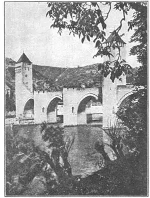
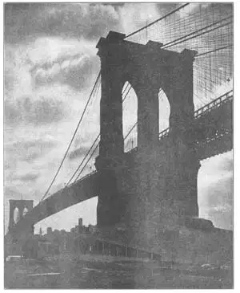
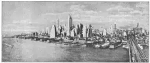

86
RAINBOWS AND GRAPE-VINES
彩虹和葡萄酒

“Now who will stand on either hand,
And keep the bridge with me?”
WHEN I was a boy, my favorite poem was “Horatius at the Bridge.” What a thrill I got whenever my father read aloud the story of the brave Roman and his two companions who held back a whole army while the bridge was being cut down to save the city! I even knew parts of the poem by heart, without trying at all to memorize them.
Horatius at the Bridge; every one knows the story of Horatius. Not so many know the story of the Bridge.
It was the first bridge in Rome, and when “the dauntless three” stood there with flashing swords and mocked the whole invading army, it was the only bridge in Rome. It was a wooden bridge, one that could be cut down with axes, and it was so important to Rome that it was in charge of priests. We are told that when a new bridge was built, after Horatius and the old bridge had saved the city, the priests themselves built it.
Have you ever heard the Pope spoken of as the Supreme Pontiff? Supreme Pontiff is one of his titles. Would you ever guess that this title of the Pope came from the bridge that Horatius defended? The chief priest in ancient Rome was called the Pontifex Maximus, which in English means the Greatest Bridge Builder. He was called this because he was chief of those in charge of the bridge. So pontifex, or pontiff, came to mean priest, and that is why the Supreme Pontiff or Bridge Builder is one of the Pope’s titles.
The pont part of pontiff turns up in another strange use. Try to imagine what Horatius would have thought if he had suddenly seen a seaplane flying overhead, its propeller roaring, its pontoons glistening in the sun. A pontoon is a kind of boat used to hold up a bridge. A bridge across boats is called a pontoon bridge. And so the pontoons that hold a seaplane upon the water got their name because they are like the boats that hold up a pontoon bridge.
And now I’d better tell you what kinds of bridges there are. There aren’t as many different kinds as you might think. Really there are only five kinds, and that’s a good thing because you can easily learn those five, and then you can name any kind of bridge you see.
Here they are:
Number One is the simple beam bridge. A log across a stream is the simplest kind of a simple beam bridge.
Number Two is the arch. A rainbow would make a beautiful arch bridge, if you could only walk across it. The Chinese have some beautiful arch bridges.
Number Three is the suspension bridge. A wild grape-vine stem that hangs from one tree to another is a good suspension bridge—for a monkey.
Number Four has the hardest name to remember. It is the cantilever bridge. If you have a board you can make a cantilever bridge. Hold the board by one end so it just reaches across to the table, but don’t let it rest on the table. Then the board is a cantilever bridge. A cantilever is a simple beam supported at one end, something like a diving board. Often the bridge has a cantilever coming from both banks of a stream and meeting in the middle.
Number Five is the truss bridge. A truss bridge has its beams strengthened by a stiff framework of different parts fastened together. The framework may either rise above the roadway of the bridge or be beneath it. The frame of a bicycle is something like a truss. Cantilever bridges are often built with trusses. Most truss bridges are built of wood or iron or steel.
These are the five kinds of bridges. What about pontoon bridges? Pontoon bridges are just simple beam bridges with the beams resting on boats instead of on posts or piers.
The earliest bridges were, naturally, beam bridges. Xerxes of Persia, a great king, built a pontoon bridge across the Hellespont when he came to fight the Greeks in 480 B.c.
Strange to say, the Greeks, who could build a perfect building like the Parthenon, were not bridge builders. They traveled by boat more than by road and so they needed few bridges. Then too, the rivers of Greece are generally small enough to be crossed without a bridge, though the Greeks probably got their feet wet in crossing.
That brings us back to the Romans, the greatest bridge builders until modern times. All roads led to Rome, and the roads had many bridges. Not only in Italy but in Spain and France, in England and in Austria, the fine Roman bridges helped the traveler to get where he wanted to go. Many of the Roman bridges are still standing, are still in use after two thousand years of service. Some were of wood and of course they disappeared long ago, but most of them were built of stones so well fitted together that often no mortar was needed.
The biggest Roman bridges were not meant to carry people, however. They were bridges to carry water. If you had wanted to take a bath in ancient Greece you would have had to carry the water in jars from the stream or well or else use the stream for a bath tub. But in a Roman city many of the houses had running water and there were also public bath houses where you could bathe in beautiful indoor swimming pools full of fresh, clear water. All this water was brought to town by long aqueducts, stone bridges with a trough on top. These aqueducts went across country for miles from the mountain streams to the city.
When an aqueduct came to a valley it didn’t go dipping down into the valley and then up on the other side. It went straight across—as a very high bridge indeed. The Romans couldn’t make water pipes very well and so if the aqueducts had gone down hill and then up again, the water would have spilled out at the bottom of the dip. The bestknown aqueduct is now the famous ruin called the Pont du Gard over the river Gard near Nîmes in France.
After the fall of the Roman Empire, bridge building had a fall too. For years and years during the Dark Ages very few bridges were built. Then in the twelfth century A.D. a strange thing happened. Bridges throughout Europe went back to the care of priests. Only, the priests this time were Christian priests. They formed a society called the Brothers of the Bridge.
At first the Brothers of the Bridge just kept little inns at river crossings, where travelers might stop. But soon they built their own bridges at these places. Often the Brothers made the roadway over the bridge so narrow at the middle of the bridge that only one horseman could cross at a time. This was to make it hard for robbers and soldiers to dash across and attack travelers. Of course such bridges weren’t much good for wagons, but the roads weren’t much good for wagons, either. Many of these bridges were strongly fortified with huge stone towers at each end, so that they could stop robber bands or even armies from crossing.

NO.86-1 A MEDIEVAL BRIDGE CAHORS，
FRANCE
（法国卡奥尔一座中世纪的桥）
Courtesy of Pratt Institute
Probably the most famous bridge of the Middle Ages was the old London Bridge over the river Thames. It had houses built on it, some of them four and five stories high, but its foundations weren’t very solid and so it was always needing repairs. Parts of it even fell down at various times. You remember “London Bridge is Falling Down”? At that, it lasted, with many repairs, from 1209 to 1831, when it was torn down to make way for the new London Bridge.
As you know, after the Middle Ages came the Renaissance, when many famous bridges were built. I’d like to tell you about some of them if I had more space—about the most photographed bridge in the world, the Bridge of Sighs in Venice, and about the Ponte Vecchio in Florence, and about the oldest bridge in Paris, which is still called the Pont Neuf or the New Bridge, and about the Pont Royal and the Pont Marie, also in Paris. All these are stone bridge.
Modern bridge building began with the railroads, about 1830. At that time iron bridges were built. Then came steel bridges, and finally concrete and reinforced concrete bridges. Reinforced concrete bridges have iron bars inside the concrete to make them stronger. Many handsome reinforced concrete bridges have been built in recent years. Generally, they are arch bridges—sometimes with one arch and sometimes with many. In the United States they are the favorite road bridges.

No.86-2 BROOKLYN BRIDGE OVER THE EAST RIVER, NEW YORK
（纽约东河上的布鲁克林桥）
Photograph by Ewing Galloway
The iron and steel bridges are often truss bridges. In fact, truss bridges are altogether modern.
Some of the earliest bridges in Asia and South America were suspension bridges. These were hung from cables of rope or vine and were pretty shaky. Some of them are still in use. When you cross one you can’t help hoping you’ll get over alive. Really they are quite strong in spite of being so shaky. But I’d hate to try to cross one on an elephant —or in an automobile.
Modern suspension bridges are hung from steel cables. Most of them are very large and cost millions of dollars to build. One of the most famous is the Brooklyn Bridge over the East River at New York. Bigger ones have been built since, but this grandfather of modern suspension bridges is still considered one of the finest to look at. It could carry whole herds of elephants in safety. It does in fact carry herds of street cars and automobiles.
When you go for a trip next time, keep your eyes open for bridges. Many of the finest bridges in the world are right here in the United States. Some travelers play games with bridges as they travel along. In this game a suspension bridge counts 20 points, a cantilever bridge 15 points, an arch bridge 10 points, a truss bridge 5 point and a simple beam bridge 2 points. Sometimes when you go over a bridge you can’t see what kind of bridge it is. All you can see are the railing and the roadway. That would count only one point. Whoever sees the bridge first, gets the points.
Last of all, I’ll tell you this. All bridges aren’t beautiful, but there are probably fewer ugly bridges than anything else we build; and even ugly bridges generally have an interesting story, if you can find out what it is. One of the ugliest bridges is in Barnstable, England. It has many arches, each one a different size. The size was not planned by an architect, but was determined by the amount of money every citizen donated.

No.86-3 SKY-SCRAPERS OF NEW YORK（纽约的摩天大厦）
Photograph by Brown Brothers
【中文阅读】
“现在，谁愿意单手倒立，
和我一起托起这座大桥？”
我小时候，最喜欢读的一首诗是“桥上的霍拉提乌斯”。断桥救城，罗马英雄和他的两伙伴阻挡了整个敌军的进攻！每当我爸朗读这一段故事时，我就特别兴奋！诗中有几段我已烂熟于心，毫不费劲就能背出来。
桥上的霍拉提乌斯；每个人都知道霍拉提乌斯的故事，但并不是许多人都知道那座桥的故事。
那可是罗马的第一座桥，“三勇士”手握亮剑，伫立桥头，嘲笑不断逼近的敌军。它也是罗马的唯一的一座桥。
这是一座木桥，用斧头就能砍断。可它对罗马来说太重要了，所以就由祭司负责看管。据说霍拉提乌斯和那座老桥在保住了罗马城之后，祭司们亲手造了一座新桥。
你有没有听说过，教皇是被当做“祭司长”来看待的？而祭司长只是一个头衔。你能想到教皇的这个头衔起源于霍拉提乌斯和他护桥的故事吗？古罗马当时的祭司长名叫庞蒂菲克斯·马克瑟穆斯（Pontifex Maximus），英语的意思是“最伟大的造桥者”。人们这样称呼他，因为他是当年造桥的主要负责人。因此“庞蒂菲克斯”（pontifex）或“庞蒂菲”（pontiff），就开始有了“祭司”（priest）的意思，这也是为什么“祭司长”或“造桥者”成了教皇的头衔。
而pontiff中的pont又出现在另一个奇怪的用法中。想象一下，如果霍拉提乌斯突然看到一架水上飞机从头顶飞过，螺旋桨轰轰作响，“浮筒”（pontoons）在太阳下闪闪发光，他会想到什么呢？浮筒曾是一种用来支撑桥的小船。横搭在小船上的桥叫做“浮桥”。而在水上托起水上飞机的浮筒就是这样得名的，因为它们看起来像是支撑浮桥的小船。
现在我最好还是介绍一下桥的种类。它们并没有想象的那么多。实际上只有五种桥，太好了，因为就五种也就便于了解，好让我们看到哪种都能认得。
五种桥如下：
第一种最简单，叫独木桥。而最简单的独木桥就是在小溪上横担一根木头。
第二种是拱桥。彩虹会造一座美丽的拱桥，只不过人不能从上面走过。中国有许多好看的拱桥。
第三种是吊桥。对猴子来说，攀在两棵树之间野葡萄藤是一种再好不过的吊桥。
第四种桥的名称有点难记。它叫做悬臂桥。拿块木板，搭座悬臂桥看看。握住木板的一端，将另一端刚好碰到桌边，但不要放在桌上。这样木板就成了悬臂桥。悬臂桥是一种只在一头固定的独木桥。有点像游泳池跳水用的跳板。通常情况下，悬臂从 溪流的两岸伸出，在中间会合。
第五种是桁架桥。桁架桥指桥梁靠坚固的框架将各个部分牢牢固定。框架既可以按在桥面上方，也可以按在桥下，有点像自行车的车架。悬臂桥通常需要桁架来支撑。桁架桥可以是木制的，也可以用钢铁作材料。
就这五种桥。怎么没有谈到浮桥呢？其实浮桥就是最简易的独木桥，只不过没把桥梁担在桥墩上而是搭在船上。
最早的桥当然是独木桥。伟大的波斯王薛西斯于公元前480年攻打希腊时，造了一座横跨达达尼尔海峡的浮桥。
奇怪的是，曾经建造过像帕台农神庙那样完美建筑的希腊人却不会造桥。他们旅行时喜欢乘船，不喜欢走路，所以就不怎么需要桥。而且希腊的河流都非常窄，没有桥也能过，尽管有时可能要湿脚过河。
这又将我们带回到了罗马。罗马人直到现代还能算作最伟大的造桥者。条条大路通罗马，罗马路上都有桥。不但在意大利，就是在西班牙、法国、英国和奥地利，漂亮的罗马式大桥帮助了行人到达目的地。
罗马人造的桥有许多在使用了两千年后至今还依然挺立。那些木桥当然早就不在了，大多数是石桥，那些石块紧紧地衔合在一起，基本上不需要用灰泥加固。
然而罗马的那些大桥原来并不是让人行走，而是用来引水的。在古希腊，你要是想洗澡，就不得不用水罐子到河边或井里打水，或者就直接把小溪当浴缸。不过在属罗马的城里，许多房子都装上了自来水，也有公共澡堂，供人们在这盛满清澈溪水的漂亮室内游泳池里尽情地沐浴。所有的水都是由长长的高架渠和顶端开槽的石桥引进城的。这些高架渠绵延乡间数英里，引山泉入城。
当高架渠途径山谷时，并没有爬上爬下，而是直跨山谷——真像一座高架桥。罗马人不大会造水管，所以要是让高架渠顺着山势上下的话，水就会在底部产生倒流。最有名的高架渠要算法国境内尼姆城附近加尔河上著名的“加德桥高架渠”遗迹。
罗马帝国衰败后，桥梁建筑也衰落了。整个黑暗时期几乎就没怎么造桥。接下来到公元12世纪，出现了一个奇怪的现象。欧洲所有的桥梁都回归祭司管理。而这个时期的祭司都是信仰基督教的神职人员。他们成立了一个社团组织，叫做“桥梁兄弟会”。
一开始，桥梁兄弟会只在河岔渡口开设几家小客栈，供行人歇脚。但不久他们就在这些地方动手造桥。他们通常会把桥中间的路面修得很窄，一次只过单人匹马。这样一来，强盗和兵丁就很难快速过桥抢劫行人。当然，四轮马车碰到这种桥和这样的路就麻烦大了。这些桥大多在两头建有高大的石塔作碉堡加强守卫，可以及时阻止强盗团伙，甚至阻挡敌军过桥。
中世纪最著名的桥也许要算那座泰晤士河上的伦敦古桥了。桥上还建有房子，有些达四五层楼高，但桥墩不太结实，所以就老是要修缮。桥的某些部位都塌过好多次了。你还记得《伦敦桥在坍塌》那首歌吗？唱的就是伦敦桥经过多次维修，从1209年维持到1831年，终于被拆，并在此建立了新伦敦桥。
正像你所知道的那样，中世纪之后便是文艺复兴时期，在此期间，人们造了许多名桥。如果篇幅够的话，我会做些介绍——像世界上最值得拍照的威尼斯叹息桥、佛罗伦萨的韦基奥桥、至今还被称作新桥的巴黎最古老的纳夫桥以及巴黎的皇家桥和玛丽桥。所有这些桥都是石桥。
现代桥梁建筑始于1830年左右的铁路建设。那时先造的铁桥，接着造了钢桥，最后是钢筋混凝土桥。钢筋混凝土桥是在混凝土里掺杂铁块，使桥更坚固。近年来人们建造了许多漂亮的钢筋混凝土桥。总的说来，它们都是拱桥——有的是单拱，有的是多拱。在美国它们是最受欢迎的路桥。
铁桥和钢桥通常都是桁架桥。事实上，桁架桥基本上都是现代的。
亚洲和南美洲最早的一批桥都是吊桥。它们悬挂在用绳索或藤蔓做的缆绳上，摇摇晃晃的。有些至今还在使用。在过吊桥时，人总会忍不住地指望能平安无事地走过去。除了摇晃之外，它们其实是很结实的。但再结实我也不想试着骑大象过桥，也不愿开小车过桥。
现代吊桥都是吊在钢缆上的。大部分都很大，造价好几百万美金。其中最著名的一座就是纽约东河上的布鲁克林桥。尽管后来又造了一些更大的桥，但这座现代吊桥的始祖仍然被认为是最耐看的吊桥之一。成群的大象在上面跑都没有问题。事实上，桥上每天都是车水马龙。
下次有机会出门旅游时，你可要睁大眼睛多看看桥啊。世界上许多漂亮的桥都在美国。有些旅行者在旅途中玩桥牌游戏。在游戏中，吊桥算20分，悬臂桥15分，拱桥10分，桁架桥5分，独木桥2分。有时候你过了桥却没看出是哪种桥。只看到桥上的栏杆和桥面的只能得1分。谁先看出桥种类的，谁得分。
还是把最后这一点介绍完吧。并不是所有的桥都好看，但是难看的桥可能总比其他难看的建筑物要少；而且只要你认真去找，即使是难看的桥，通常在背后都有一个有趣的故事。在英国的巴恩斯特伯尔有座桥，可算是最难看的桥之一了。它有许多大小不一的拱，拱的大小不是建筑师设计的，而是根据市民所捐钱的多少决定的。